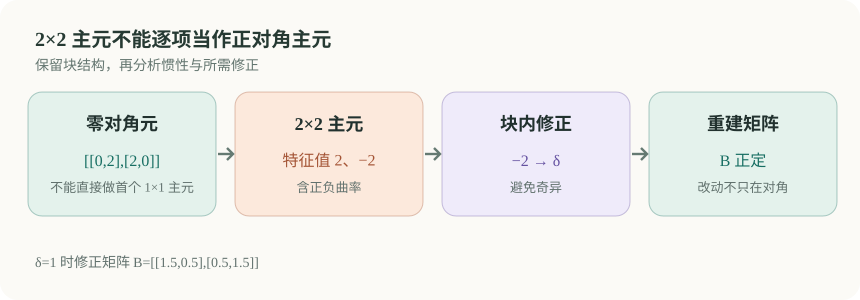

3.4.4 对称不定分解：识别 2×2 主元中的负曲率
对称不定矩阵不能总靠逐个 1×1 正主元稳定地分解。采用对称置换与 1×1、2×2 块主元，可以先看清曲率的正负，再有依据地修正。
为什么不能强迫所有主元都只有 1×1
对于一般实对称矩阵 A，如果在未经合适置换的条件下直接进行 LDLᵀ 的 1×1 消元，可能碰到零主元，即使 A 本身并不奇异。例如 H=[[0,2],[2,0]] 的行列式为 −4，矩阵可逆，但左上角的第一个对角主元为 0。
对称不定分解允许对行列做相同的置换，并使用 1×1 和 2×2 块：PAPᵀ=LBLᵀ，L 是单位下三角，B 是小块构成的块对角矩阵。2×2 块既能表达正负混合的惯性，也避免在某些零对角元处强行除零。
零对角不意味着没有有用的二阶信息
取 H=[[0,2],[2,0]]，其特征向量分别是 (1,1)/√2 与 (1,−1)/√2，对应特征值 2 与 −2。沿第一个方向二次模型向上弯曲，沿第二个方向向下弯曲。
给负特征值设置正下界 δ=1，得到 B=[[1.5,0.5],[0.5,1.5]]，它的特征值为 2 和 1。对于 g=(1,−1)，求解 Bp=−g 得 p=(−1,1)，梯度与方向内积为 −2。
如果只把原矩阵加 I，则得到 [[1,2],[2,1]]，仍有特征值 3 和 −1，并非正定。必须检查整块的谱或惯性，不能只检查对角线变成正数。

惯性如何帮助决定修正
实对称矩阵的惯性是正、负、零特征值的个数。合同变换下惯性不变，因此合适的对称分解能够在块上识别原矩阵的曲率符号。
为了获得下降方向，修正目标应当是把分解所代表的整体矩阵变成足够正定，同时限制误差和因子增长。只把 2×2 块的对角元改成正值，仍可能保留一个负特征值。
示例与一般因子分解之间的距离
本页使用能够直接求谱的单个 2×2 块，演示如何对负特征方向进行修正。通用分解包含置换、多块因子和稳定性策略；对整个矩阵的修正 E 通常不再是简单的对角矩阵。
求得的 B 正定只说明当前方向有严格下降性，并不保证完整步 α=1 可接受；仍需采用线搜索和数值条件控制。
交互实验：负特征值裁剪后如何改变方向
固定 H=[[0,2],[2,0]] 与 g=(1,−1)，调整 2×2 块的负特征值修正下界 δ。
改变参数，观察数值判据
Python：独立计算与断言
在解析可知的 2×2 对称块上执行谱裁剪，独立检查行列式、特征值与搜索方向导数。
"""Correct a single indefinite symmetric 2-by-2 block."""
def modify_block(delta: float):
if delta <= 0.0:
raise ValueError("delta must be positive")
a = (2.0+delta)/2.0
b = (2.0-delta)/2.0
det = a*a-b*b
p = (-1.0/delta, 1.0/delta)
slope = p[0]-p[1]
return (a,b,a), det, p, slope
if __name__ == "__main__":
B,det,p,slope = modify_block(1.0)
print("B:",B,"det:",det,"p:",p,"slope:",slope)
assert B == (1.5,0.5,1.5) and det == 2.0
assert p == (-1.0,1.0) and slope == -2.0
for delta in (0.25,0.5,1.0,2.0):
B,det,p,slope = modify_block(delta)
assert det > 0.0 and slope < 0.0
# Adding just I to the original H leaves a negative eigenvalue.
assert 1.0-2.0 < 0.0自检：当 δ=2 时 B 是否变为 2I？为什么原始 H 的行列式为负并不妨碍它可逆？